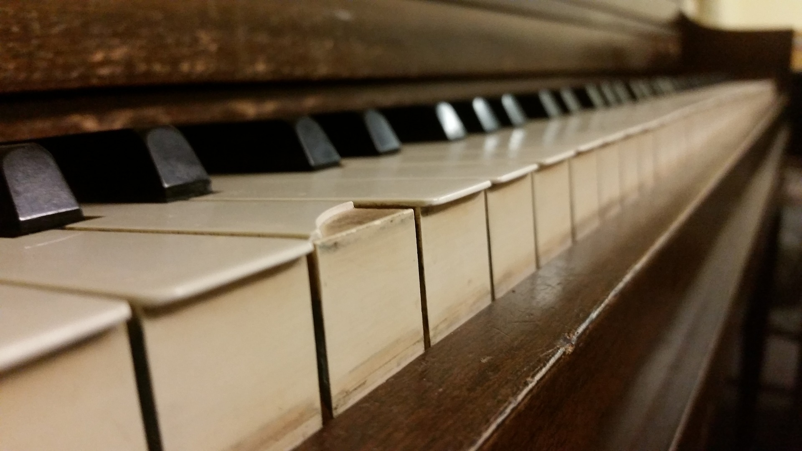
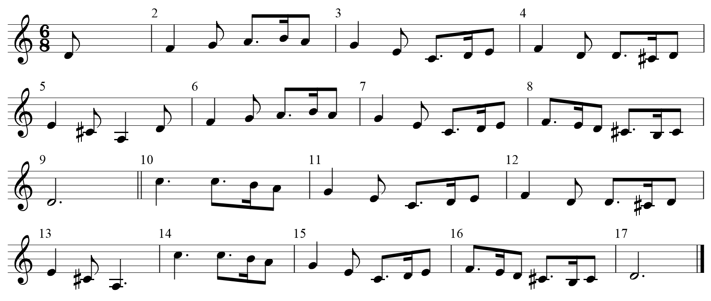
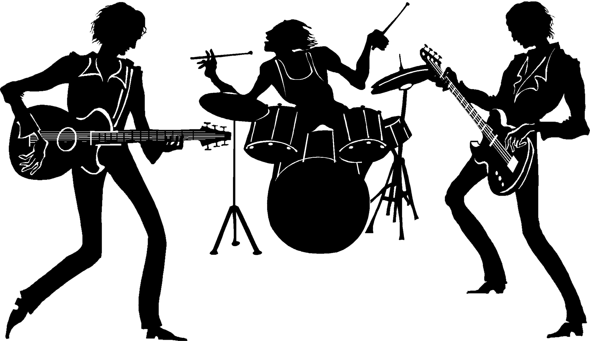

MusicalOdyssey.co.nz - THIS IS A STUDENT WEBSITE
Getting Started
So you've decided you want to play an instrument, and want to know where to go from here. Hopefully the following steps can give you a good idea of where to start.

2) Get your hands on your instrument of choice. Unfortunately, musical instruments can be very expensive. Don't be deterred from
picking up a low budget imitation, or something second hand. Although the sound quality of the cheaper options is likely to be poor, they are great for
a beginner practising the basics of how to operate the instrument, and there are many techniques you can learn and master on cheap
instruments before you move on to a more professional option. Sometimes cheap instruments are sought after by even professional
musicians, as they have qualities that can't be found elsewhere, and if you have the patience and are willing to experiment, you
can end up achieving a unique sound.

3) Learn. There are an incredible number of resources available for every level of musicianship, from the absolute basics to the
most complicated techniques possible. Probably the most effective method for learning an instrument is to have one-on-one teaching
with a professional, so if this is within your means, it is highly recommended. Don't discount other avenues as a primary source
of knowledge, or a supplement to your lessons, however. YouTube is home to a huge variety of free lessons for almost any topic.
Learning from books would also be useful, but most of your learning is going to come from hearing other people play and trying to
imitate their techniques.


5) Find other people to play with. This doesn't apply to all instruments and styles, but many forms of music can have a whole new
dynamic when played with other people. Once you have found people that you are comfortable playing with, you can explore different
opportunities compared to what you are restricted to playing alone. There is a huge sense of achievement when you perform with
like minded musicians, and the different perspectivies offered by other people allow for endless possibilities.